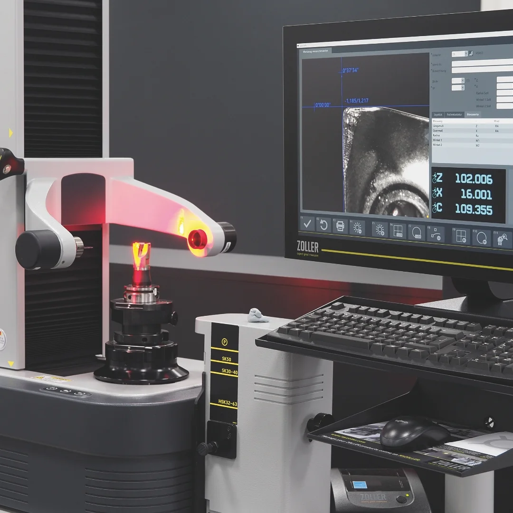
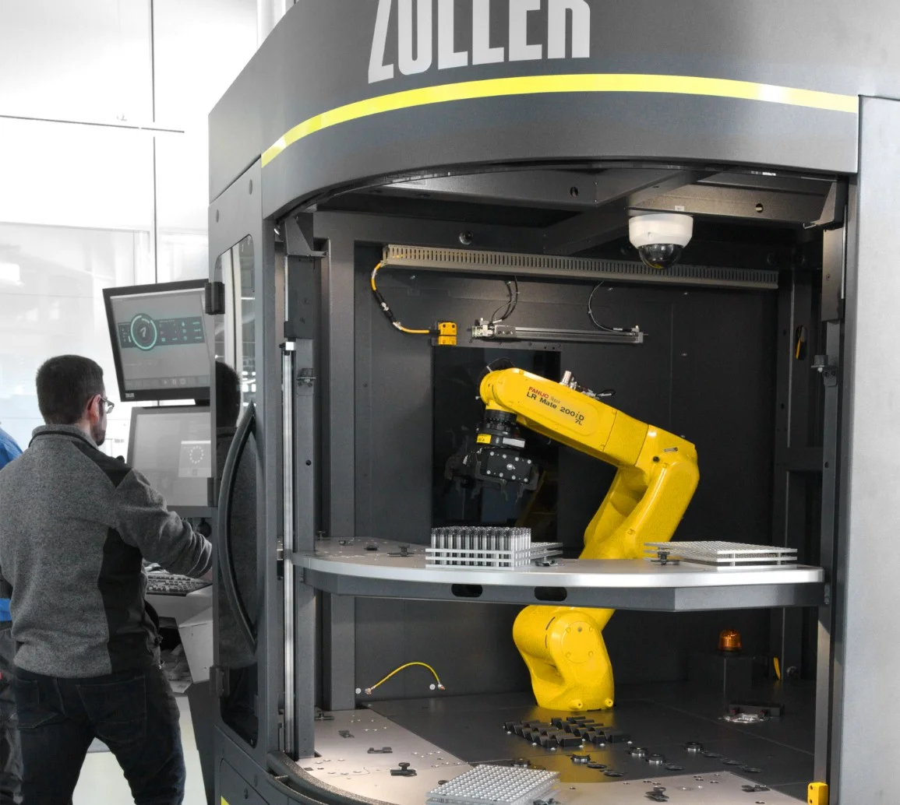

Only electricity from renewable sources
We use electricity exclusively from renewable energy sources. Our own photovoltaic system on site makes a contribution to this.
Read more
Boost the efficiency of your tooling processes with solutions from the technology leader: ZOLLER.
Boost the efficiency of your tooling processes.
ZOLLER Inc. · North American Headquarters

ZOLLER opened its U.S. branch in Ann Arbor, Michigan, in 1997 – about 40 miles west of Detroit. In 2018, ZOLLER Inc. moved into its newly built headquarters. Its large, fully equipped showroom has become the hub for customer meetings, training sessions, presentations and in-house events.
From here, ZOLLER Inc. serves customers in the United States, Canada and Mexico.

ZOLLER offers a reliable AI function for evaluating tool life. The goal is to use tools efficiently up to the technical wear limit—supported by system-based evaluation of real-world tool data.
On this basis, clear decisions can be made regarding continued use. This helps avoid unplanned machine downtime caused by tool failure.
ZOLLER’s solutions deliver significant efficiency
gains in tooling processes. That’s why every investment pays for itself quickly. Even with just one CNC machine, ZOLLER’s solutions reduce time, costs, and machine downtime.

At ZOLLER, “premium” is a promise,
not a privilege.
Higher profits, more orders, less time spent, low production costs—ZOLLER boosts its customers’ efficiency worldwide.
By reducing this percentage, a ZOLLER »hyperion« reduces setup times at SycoTec. Turning tools and multi-tool holders are measured on the horizontal presetting and measuring machine. SycoTec uses these to manufacture high-speed micro-motors.
This is the potential reduction in labor costs for tool inspection in a three-shift operation when you use the »roboSet 2« automation solution.
That’s the average time it takes for a presetting and measuring machine to pay for itself. Basis: Single-shift production with one CNC machine. With two machines, the time is cut in half.
ProCam, a family-owned business based in Michigan, USA, increased its revenue by $1 million within two years of purchasing a »smile 420«. Thanks to shorter setup times and less machine downtime, ProCam was able to process more orders.
Scroll – the camera flies through every product world of the 3D showroom.
Cut setup times by 40% or more.
12 products
Connect processes, secure quality and produce faster.
20 products
Document quality and create digital twins.
15 products
Flexible, modular automation for cutting tools.
8 products
Shrink tools in and out in record time.
2 products
Tool holders with »idChip« – the perfect interface for your digital manufacturing.
1 product
Protect spindles, secure quality: with the best balancing machines on the market.
1 product
Click any machine, read the details, and walk through every product world in walk mode.

Increased Productivity with ZOLLER presetting and measuring machines
The ZOLLER Cost-Effectiveness Calculator estimates the potential savings for your operation.

Michael Mauth, Managing Director of Mauth Werkzeug-Schleiftechnik in OberndorfAutomation is essential for remaining competitive on the global stage.

Frank Schaefer, Dipl.-Ing., Member of the Executive Board, LIDU Maschinenbau Lienenbrügger GmbH in DülmenDigitization using ZOLLER software systems played a key role in making our production significantly more cost-effective.

At the ZOLLER Smart Factory in Pleidelsheim, we showcase the ZOLLER system with all its solutions, including complete shop floor automation. See for yourself the high efficiency of seamless CAM-to-part processes and the benefits of consistently available tool data.
Find out more now about how to book your appointment for a visit or a one-on-one consultation with an »expert«.

The »toolBalancer« from ZOLLER is a state-of-the-art tool balancing machine that achieves balancing results < 0.4 gmm with high ergonomics and simple operation. All »toolBalancers« are TÜV and UL/CSA approved.
< 0.4 gmm balancing quality
We use electricity exclusively from renewable energy sources. Our own photovoltaic system on site makes a contribution to this.
Read moreA place for nature to thrive on the ZOLLER company grounds
Read moreWith ZOLLER, production shops make optimal use of their machines, material resources and tools. This reduces missing parts and improves efficiency.
Read more